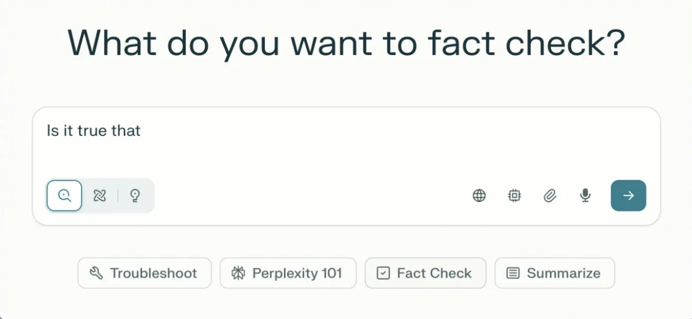
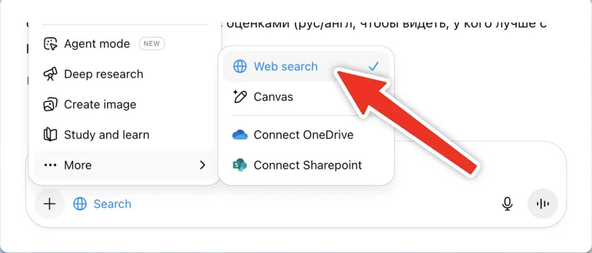

Анти-галлюциноген
LLM по умолчанию умеет красиво врать. Учимся проверять любое утверждение «под ключ» — с источниками, вердиктом и оценкой рисков.
Факт-чекинг — твой спасательный круг в работе с нейронкой. Она всегда может «галлюцинировать». Просишь ответ со ссылками и датами — сразу видишь, откуда факт, и можешь провалиться в источник.

💗 За что любим факт-чекинг с LLM
- Видно источники. Просишь «только проверенные ссылки» — сразу понятно, откуда взялся факт, можно быстро туда «провалиться».
- Экономит часы. Одно окно → тезис, проверка, ссылки и краткое резюме.
- Работает везде. Не только диалоги с нейросетью, но и статьи, интервью, слайды, материалы Википедии — каркас проверки один.
- Незаменимо. База гигиены в работе с LLM, которая по умолчанию может выдумывать.
Что понадобится: браузер + VPN (если ты в РФ) и то, что проверяем — утверждение, ссылка или скрин.
🧭 Как это работает
Логика простая: Claim → Evidence → Verdict.
- Claim — сначала формализуй тезис: что именно проверяем.
- Evidence — собери источники с датами и цитатами.
- Verdict — получи вердикт и прими решение.
🛠 Чем проверять
- Perplexity AI — отдаёт список источников (статьи, сайты, PDF), режим Copilot для уточнений. Лучший баланс точности и удобства.
- Google Gemini — ну а кто проверит источники лучше самого гугла 🙂
- ChatGPT — при включённом веб-поиске даёт ссылки. Важно проверять, что не подсовывает псевдо-источники.
В ChatGPT обязательно включи режим поиска в интернете — иначе будет отвечать «из головы».

Некоторые (в основном китайские) LLM выносят «Проверку фактов» отдельной фичей — например, Genspark.
👣 Пошагово
- Запрос к LLM с жёстким форматомКопируй промпт ниже, вставь свой тезис — и получишь структурный разбор с источниками и вердиктом.
- Проверь ссылки рукамиУбедись, что сайты реальные, а не «галлюцинация ссылок» (и такое бывает). Очень полезная привычка.
- Кросс-проверка второй LLMПопроси другую модель кратко оценить тот же тезис и сравнить источники и даты. Это гасит «модель-специфичные» галлюцинации.
Промпт для шага 1:
🎯 Куда прикрутить уже сегодня
Цитата перед постом
Проверить цитату из медиа перед постом или рассылкой — чтобы не разносить фейк.
Цифры на слайде
Верифицировать метрики для инвестпитча: откуда цифра, свежая ли, не подменили ли ось.
«Работает ли X»
Сверить утверждение по систематическим обзорам: что доказано, а что гипотеза.
Кто дописал абзац
Разобраться, кто и когда добавил спорный кусок в статью (Who Wrote That?, WikiBlame).
Научный пресс-релиз
Разложить: что реально доказано, а что — красивая формулировка ради заголовка.
Проверка картинки
Столкнуть дату и контекст фото с оригиналом — и запросить источники.
⭐ Задание со звёздочкой
Если факт-чекишь часто или по работе — заведи отдельный проект и загрузи в него системные инструкции редактора-фактчекера:
🧼 Хозяйке на заметку
- Требуй источники с датами. Правило: отвечать, только если ≥3 независимых источника высокого доверия, каждый с датой. Меньше — «Недостаточно проверяемых источников».
- Всегда фиксируй даты. Старая правда сегодня может быть ложью.
- Никаких «единственных» источников для резких выводов — минимум 3 независимых.
- Допроверяй через факт-чек-базы: Google Fact Check Explorer, Snopes, PolitiFact, AP, Reuters, AFP.
По свежему Hallucination Leaderboard (Vectara) у топ-моделей «заземлённые» галлюцинации в коротких ответах уже ~1–2%. Но это сильно зависит от задачи и промпта — так что проверять всё равно надо.
🌀 Альтернативы и полезные базы
Google Fact Check Explorer — агрегатор проверок
Consensus & Scite — для науки
Who Wrote That? & WikiBlame — для Википедии
с любовью, Настя ✦